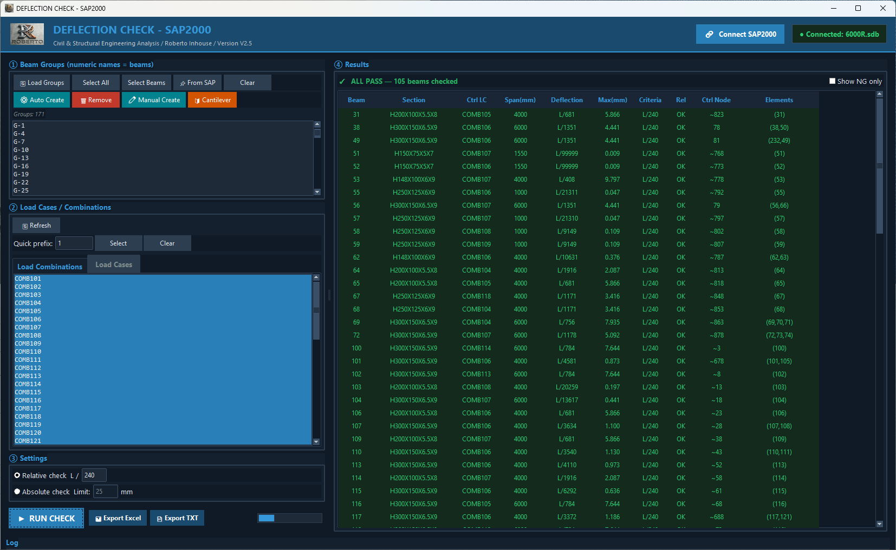
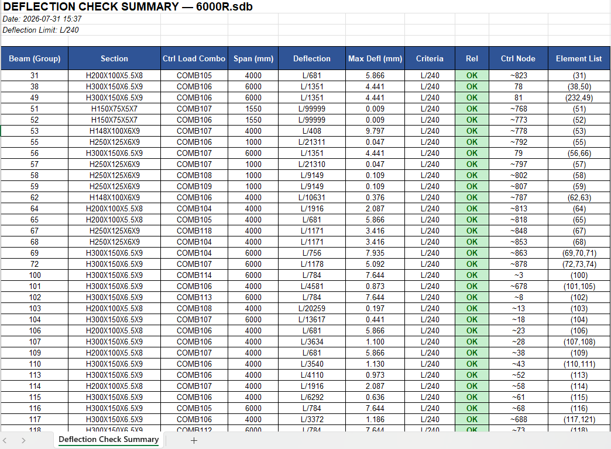

Kết cấu thép
Kiểm tra độ võng dầm thép
Kiểm tra độ võng dầm kết cấu thép bằng phương pháp chord rotation 3D, kết nối trực tiếp SAP2000. Tự nhận diện dầm console và tự gom Physical Member.

⤢
Tính năng chính
- <b>Kiểm tra tương đối</b> L/δ theo phương pháp chord rotation 3D
- <b>Kiểm tra tuyệt đối</b> theo U3 (mm) khi cần giới hạn võng theo trị số
- <b>Tự nhận diện dầm console</b>
- <b>Auto Create Groups</b> từ nhận diện Physical Member
- Đọc cả node auto-mesh nên dầm đã chia nhỏ vẫn kiểm tra đúng
- Chọn nhanh nhiều Load Case/Combo; click Group là SAP2000 tự highlight
- Lọc <b>Show NG only</b>, tô màu trực tiếp trên bảng kết quả
- Xuất Excel (.xlsx) và TXT vào thư mục mô hình SAP
Yêu cầu hệ thống
Windows / SAP2000